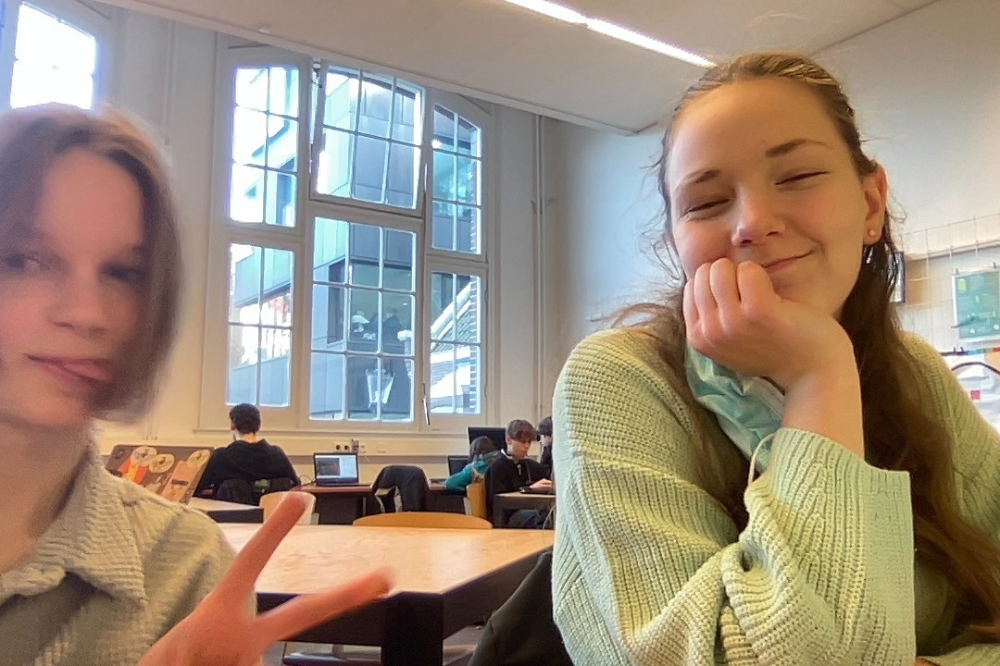

Home
Ik heet Eline van Bezooijen en ik ben vijftien jaar oud. Ik zit op het Metis montessori lyceum waar ik het coderclass profiel doe. Ik woon met mijn ouders, mijn zusje en mijn twee katten. Mijn hobby's zijn paardrijden, scouting, lezen, series kijken, schaatsen en Harry Potter lezen/kijken/spullen verzamelelen. Ik vind het leuk om tijdens mijn coderclasslessen mijn tijd te besteden aan Python en Embedded. In dit portfolio kan u mijn projecten bekijken, mijn behaalde badges zien en u kunt mijn contactegegevens vinden.
Dit is een foto van Ira (links) en mij (rechts) tijdens een les coderclass.